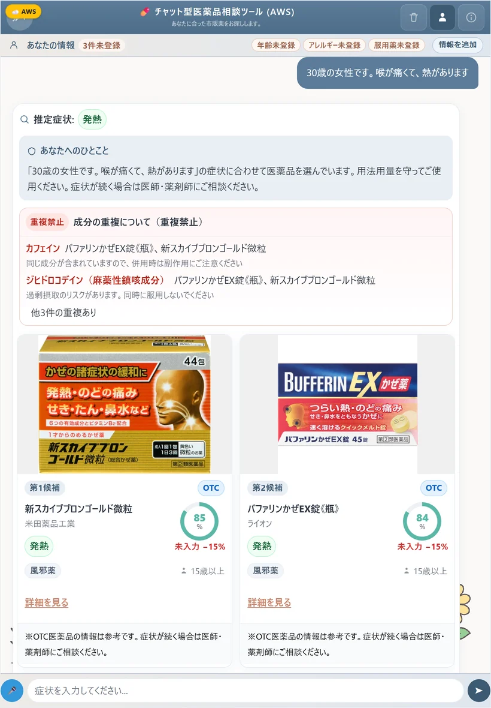
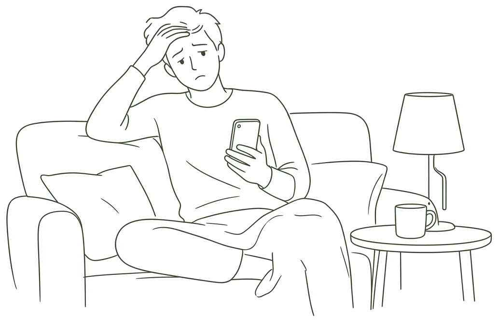
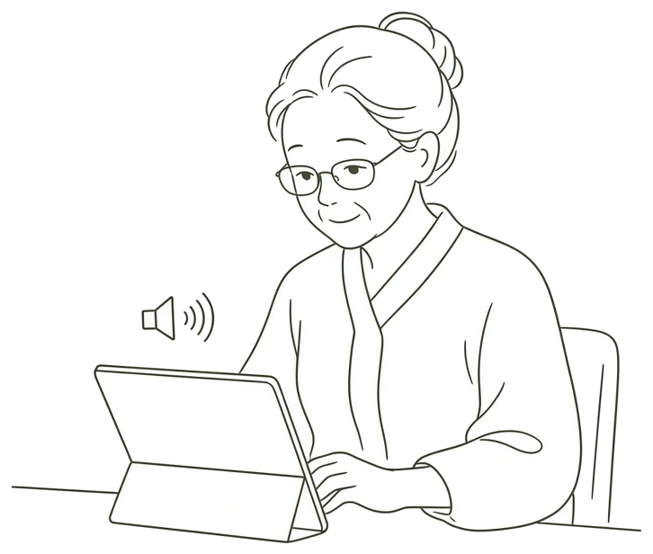
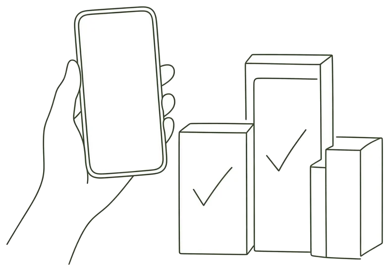
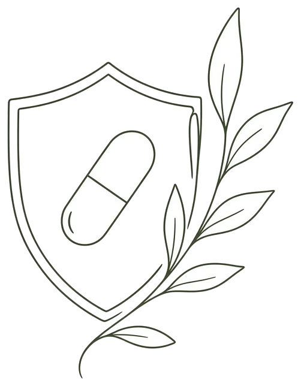
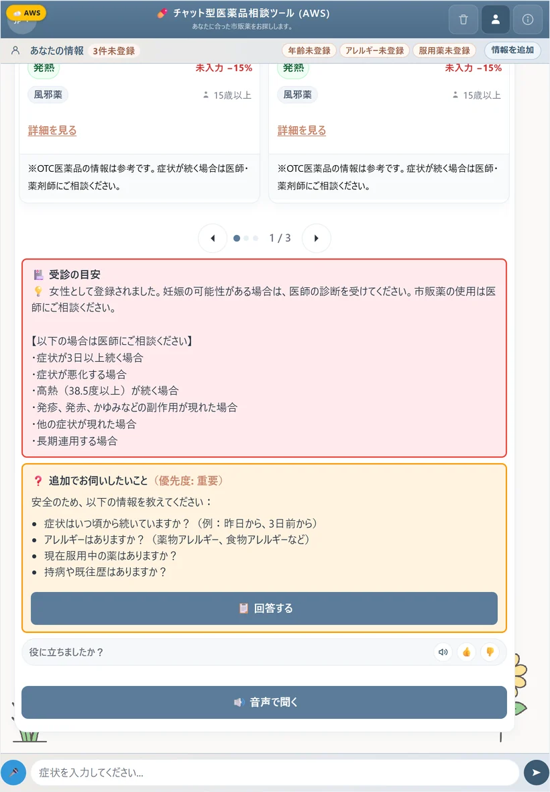
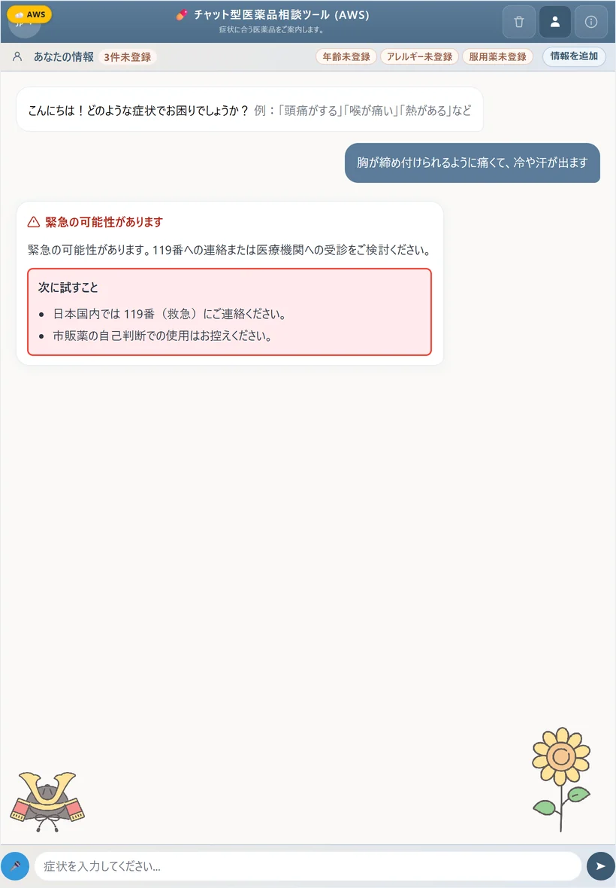

症状に合った
医薬品を
チャットで
やさしくご案内
川嶋 宥翔

チャット型
医薬品相談ツール
aws.medicine.yutok.dev
テスター限定・起動に数分
PROBLEM
%
薬剤師の説明が義務でない市販薬
収録した
件
のうち
困るのは、聞けない場面（仮説）

夜・休日

読みにくい
言葉の壁
イラストは生成AIで作成したイメージ
話す・選ぶ・守るの3つで支える
話す
声・4言語

選ぶ
規則で決める

守る
緊急は止める
イラストは生成AIで作成したイメージ
1回の相談で、候補と注意を返す
候補

受診の目安

緊急
薬の名前は
規則
で選ぶ
AIは読むだけ
症状・年齢・飲んでいる薬
→
除外
→
7項目の点数
EVALUATION
件
規則の部分を自動で点検
止まる不具合
件
→
件
次の課題は子どもへの年齢違反
COST
約
円/月
本番・検証・AIの運用費
1年の改良と、4つの受賞
回のコミット
4
つの賞＋本戦出場1
5つのことで力を貸してほしい
試験導入
医療の確認
資金
提携
仲間
まずは
テスター
として
一緒に
確かめて
ください
川嶋 宥翔
ありがとう
ございました
aws.medicine.yutok.dev
テスター限定・起動に数分